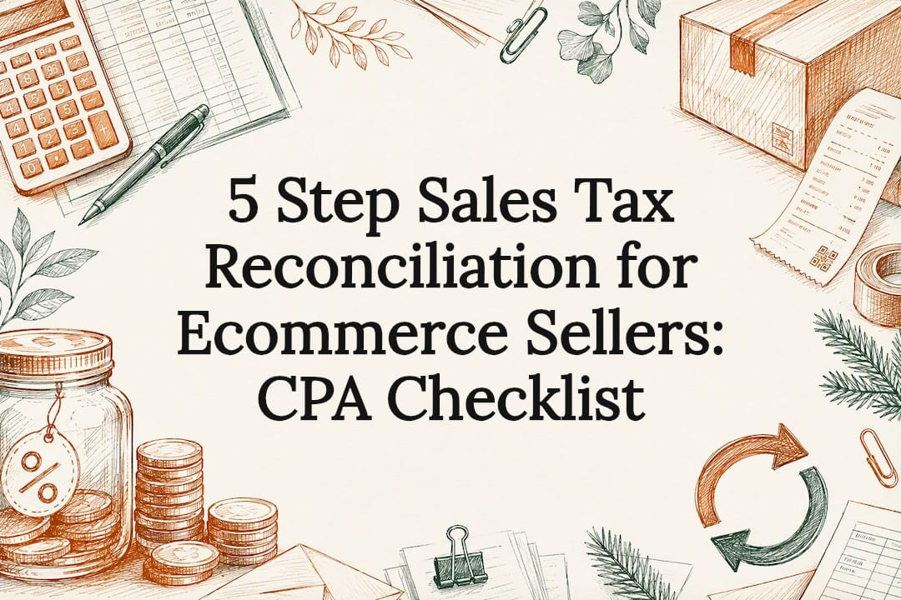
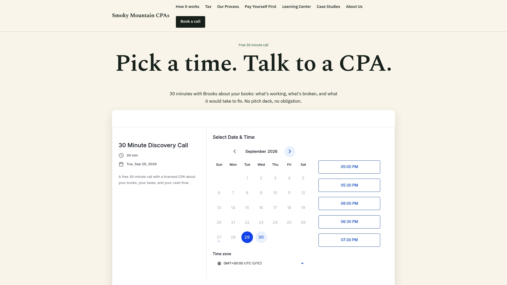

5 Step Sales Tax Reconciliation for Ecommerce Sellers: CPA Checklist

Sales tax reconciliation is the internal check that the tax you collected matches the tax you reported and the tax you remitted. The goal is simple: collected, reported, and remitted should all agree. We run this check every reporting period and keep a written record of what we found and fixed.
TL;DR:
- Most sales tax variances come from timing differences, refunds, exemptions, or marketplace sales that were not documented or split from direct sales.
- Comparing gross sales on your sales tax returns to gross receipts on your income tax return helps surface posting errors, such as sales tax booked as revenue.
- Reconciling monthly catches errors early, before small issues turn into one large discrepancy at year end.
- Keep your source reports, filed returns, refund records, and platform exports so your books tie back to what you filed.
- In Tennessee, sales made through a marketplace facilitator that collects and remits the tax stay off your own return, so you do not report them twice.
Table of Contents
- Scope: monthly reviews versus annual state reconciliation
- A five step reconciliation checklist you can run this period
- Common discrepancies and how to isolate the cause
- Recordkeeping and a reconciliation schedule you can reuse
- Marketplace sellers and facilitator reporting
- Mistakes we see in cleanup work
- What actually matters in sales tax reconciliation
- How we handle sales tax reconciliation for clients
- Sources
- FAQ
Scope: monthly reviews versus annual state reconciliation
Reconciliation pulls from four sources: your sales records, your point of sale or ecommerce platform exports, your payment processor deposits, and the return you actually filed. Each one tells a slightly different story, and the job is to make them agree.
We recommend reconciling monthly, even if the state only has you file quarterly or annually. Tennessee assigns each seller a filing frequency, and a monthly check catches a posting error while you still remember what caused it. Waiting until year end means digging through twelve months of transactions to find one mistake.
Some states go further and require an annual return on top of the regular ones. Michigan's Form 5081 is an annual return for sales, use, and withholding taxes, and for the 2025 tax year it is due February 28, 2026. Hawaii requires an annual return and reconciliation (Form G‑49) for its general excise tax. In states like these, the annual filing is where the whole year gets trued up.
What belongs in scope for any reconciliation:
- Gross sales and taxable sales by jurisdiction
- Tax collected per your books versus tax reported on the return
- Refunds, exemptions, and marketplace facilitator sales, tracked separately
- Actual remittance confirmations from each filing
A five step reconciliation checklist you can run this period
Here is the process we use, broken into five steps. It works whether you run one store in Knoxville or sell across a dozen states.
- Pull your source reports. Get exports from your point of sale system, your ecommerce platform (Shopify, Amazon, Etsy, whatever applies), your payment processor, and your accounting ledger for the same period.
- Compare the three numbers that matter. Line up gross sales, taxable sales, and tax collected across every source. They should match, or the difference should have a clear reason.
- Categorize every variance. Sort mismatches into buckets: timing differences, refunds, marketplace facilitator sales, exempt or resale sales, and tax inclusive pricing that got booked wrong.
- Correct the books or document why not. If a variance points to a real error, fix the entry. If it is just timing or a known exemption, write down why no correction is needed. Then confirm your filed return and your actual payment match your books.
- Archive the reconciliation with a sign off. Save the schedule, the source reports, and a note showing who reviewed it and when.
Pro Tip: Once a year, compare gross sales on your sales tax returns to gross receipts on your income tax return. If they do not match, check whether sales tax is sitting in a revenue account instead of a liability account.
If you sell on Shopify, our free Shopify bookkeeping checklist walks through which exports to pull for step one, so you are not hunting through platform settings every month.
Common discrepancies and how to isolate the cause
Most sales tax variances we see trace back to one of six causes: timing differences between when a sale happened and when it was deposited, refunds and chargebacks that were never backed out of taxable sales, exempt or resale sales that were not documented, shipping charges taxed inconsistently, marketplace facilitator remittance that overlaps with your own filing, and tax collected on a tax inclusive price that got posted as ordinary revenue.
The diagnostic that finds many of these fastest: compare the gross sales on your sales tax returns to the gross receipts on your income tax return. The IRS Retail Audit Technique Guide says the gross sales reported to a state sales tax agency will generally match the gross receipts on the income tax return, and that any difference should be reconciled. In our experience, a mismatch usually points to a posting problem rather than a tax that was never paid.
Sales tax you collect belongs on your balance sheet as a liability, not in your revenue accounts. The same IRS guide says a retailer should not include sales taxes in gross receipts and should not deduct the sales taxes it collects and pays over to the state. That one distinction explains a large share of the reconciliation errors we see.
Other checks worth running:
- Inspect payment posting dates against the reporting period they should belong to
- Trace every refund back to the original sale and confirm the tax was reversed too
- Split marketplace sales into their own account so they never mix with direct sales
When the cause is a genuine posting mistake, correct it. When it is a timing difference or a documented exemption, a written explanation in your reconciliation file is enough, and no correcting entry is required.
Recordkeeping and a reconciliation schedule you can reuse
The IRS expects electronic records to reconcile to your books and your filed returns. Its guidance on automated records calls for audit trails and documentation that show how your retained data ties back to what you filed. Separately, the IRS FAQ on electronic accounting software records says examiners may ask for a backup file covering the month before and the month after the year under exam, a 14 month period, and that condensed data is not acceptable for a year under audit.
Keep these records, and keep them accessible:
- Backup copy of your accounting file for each tax year
- Platform and payment processor exports for each reporting period
- Filed sales tax returns and remittance confirmations
- Refund and chargeback documentation tied to the original sale
A simple reconciliation schedule keeps this organized without extra software:
| Field | What it captures |
|---|---|
| Source total | Sales and tax collected per platform export |
| Book total | Sales and tax per accounting ledger |
| Return total | Sales and tax per the filed return |
| Variance | Dollar difference between the three |
| Explanation | Why the variance exists |
| Correcting entry | Reference to the journal entry made, if any |
| Reviewer sign off | Who checked it and when |
Marketplace sellers and facilitator reporting
If you sell through a marketplace that collects and remits Tennessee sales tax on your behalf, leave those sales out of the gross sales on your own return. Tennessee Department of Revenue guidance (MS‑3) says the seller should report only its own sales made outside the marketplace, and the marketplace facilitator reports the marketplace sales on its own return.
The practical fix is to track marketplace sales in a separate income account from your direct sales, then reconcile each platform's report to what the facilitator actually remitted. We have written more on how this works for Poshmark sellers in Tennessee if you want a closer look at one platform.
- Keep marketplace and direct sales in separate accounts from day one
- Reconcile facilitator remittance reports against your own platform exports
- Never assume a marketplace's tax handling covers your direct sales too
Mistakes we see in cleanup work
The same handful of errors show up again and again in our cleanup work. Tax inclusive deposits get booked as straight revenue instead of being split into sales and tax liability. Sales tax payments get recorded as an expense instead of reducing the liability account. And marketplace sales get mixed in with direct sales, which overstates the seller's own reporting obligation.
Our case study, The Payout Never Matches the Sale, walks through what this looks like when a payout does not line up with the actual sale amount. For ongoing help, see our Shopify and ecommerce bookkeeping page.
Pro Tip: Hand your bookkeeper this short list before your next close: confirm tax is booked as a liability, confirm marketplace sales are split out, and confirm every refund reversed its tax portion too.
- Check that tax inclusive deposits were split into sales and tax liability
- Confirm tax payments reduced the liability account, not an expense line
- Verify marketplace and direct sales stayed in separate income accounts
What actually matters in sales tax reconciliation
A lot of advice on this topic treats reconciliation like a compliance chore, something you do once a quarter to stay out of trouble. That undersells it. The real value of reconciling monthly is that it turns your books into an early warning system. A wrong liability posting or a double counted marketplace sale shows up as a small variance long before it becomes a return that does not match your bank deposits.
The advice that falls short is treating reconciliation as a once a year event tied only to the annual return some states require. By the time you are working through a Michigan or Hawaii annual filing, twelve months of small errors can add up to one large one.
We put the monthly habit ahead of the annual form. Pull your reports, compare the three totals, and write down why any variance exists while the transaction is still fresh. The annual filing should confirm what you already knew, not be the moment you discover a problem.
How we handle sales tax reconciliation for clients
We build sales tax reconciliation into our monthly bookkeeping, reviewed by a CPA every period, not just at filing time. That means the comparison between collected, reported, and remitted happens before a small variance turns into a filing headache.

Our services that fit here:
- Monthly bookkeeping for Shopify and ecommerce sellers, with sales tax accounts reconciled each month
- Catch up and cleanup work if your books are already behind or you are not sure where the errors are
- Profit First advisory if you want a set routine for moving sales tax you collect out of your operating account
To see whether we are a fit, book a free call with Smoky Mountain CPAs.
Sources
If you want to check any of this against the primary guidance, these are the documents we referenced:
- Publication 5495: Retail Audit Technique Guide (IRS)
- Use of electronic accounting software records: FAQs (IRS)
- Automated records (IRS)
- MS‑3: How Marketplace Sellers Should Report Their Sales (Tennessee Department of Revenue)
- Form 5081, 2025 Sales, Use and Withholding Taxes Annual Return (Michigan Department of Treasury)
- General Excise and Use Tax forms, including Form G‑49 (Hawaii Department of Taxation)
FAQ
What does tax reconciliation mean?
Tax reconciliation means comparing what you reported on a return to what your books actually show, then explaining or correcting any difference. For sales tax, it means confirming the tax you collected, the tax you reported, and the tax you remitted all agree.
What is a sales reconciliation?
A sales reconciliation compares gross sales recorded in your accounting ledger to gross sales on your platform exports and your filed return. Any mismatch gets categorized, explained, and either corrected or documented.
What is a tax reconciliation and how is it used?
A tax reconciliation is used to catch posting errors, timing differences, and reporting mistakes before they show up in an exam. Businesses use it as an internal check, often monthly, and some states also require an annual return, as Michigan does with Form 5081 and Hawaii does with Form G‑49.
Does sales revenue need to be reconciled monthly?
We recommend it even when your filing frequency is quarterly or annual, because it catches errors while the transaction details are still fresh. Some states also require an annual return on top of regular returns, separate from any internal monthly review you run.
Recommended
- Does Poshmark Remit Tennessee Sales Tax?
- Free Shopify Bookkeeping Checklist
- The Real Cost of DIY Shopify Bookkeeping
- 5 Bookkeeping Mistakes That Cost Tennessee Small Businesses
This article is general information, not tax, legal or accounting advice for your situation. Tax rules change. Talk to a CPA about your own facts before acting. Smoky Mountain CPAs, Knoxville, Tennessee.
Want a CPA to look at your numbers?
Book a free 30 minute call. We will walk through your books and tell you what we see.